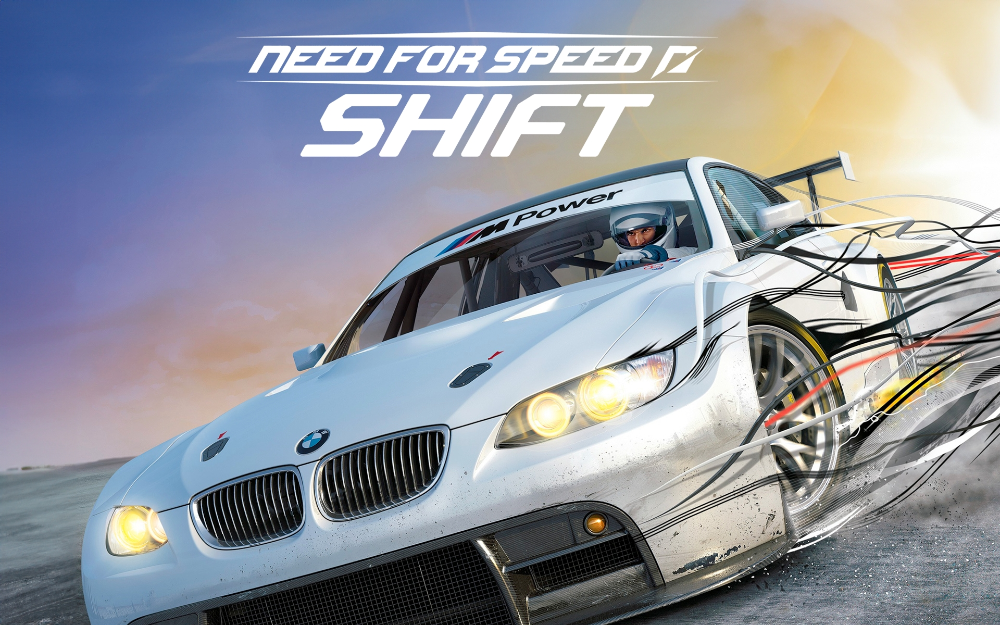

5 Claves para Dominar la Pista en NFS: Shift
Need for Speed: Shift dio un giro drástico hacia la conducción en circuitos profesionales. Para dominar el manejo desde la perspectiva interior y exprimir cada vehículo al máximo, considera estas recomendaciones:

1. Domina la trazada ideal y los puntos de frenado: Presta atención a la línea de carrera dinámica en pantalla (o a las marcas de goma y pianos del circuito). En la simulación de Shift, frenar fuerte antes de la entrada en curva con las ruedas rectas te permite mantener el control del auto y acelerar mucho antes en el ápex de salida.
2. Aprovecha la vista interior: Aunque la vista exterior es popular en juegos arcade, la cámara de cabina en Shift transmite directamente las fuerzas G, la inclinación de la chasis al frenar y los impactos. Esto ayuda a percibir mejor la pérdida de adherencia y corregir el sobreviraje a tiempo.
3. Ajusta la configuración y telemetría de tu auto: Adapta la presión de los neumáticos, la dureza de la suspensión y el escalonamiento de marchas según el tipo de circuito. Para pistas ratoneras o técnicas prioriza la aceleración y la carga aerodinámica; en circuitos de alta velocidad reduce el alerón para maximizar la velocidad punta.
4.Aprende a controlar la transferencia de peso:La física de Shift enfatiza cómo se desplaza la masa del vehículo al acelerar, frenar o girar. Evita hacer giros bruscos o soltar el acelerador de golpe a alta velocidad para no desestabilizar la parte trasera y provocar un trompo involuntario.
5. Adapta el perfil de las asistencias: Desactiva paulatinamente las asistencias de frenado y dirección para ganar control total del coche. Si utilizas volante o gamepad, ajusta la sensibilidad y la zona muerta de la dirección para lograr una respuesta más fina y progresiva en las curvas continuas.